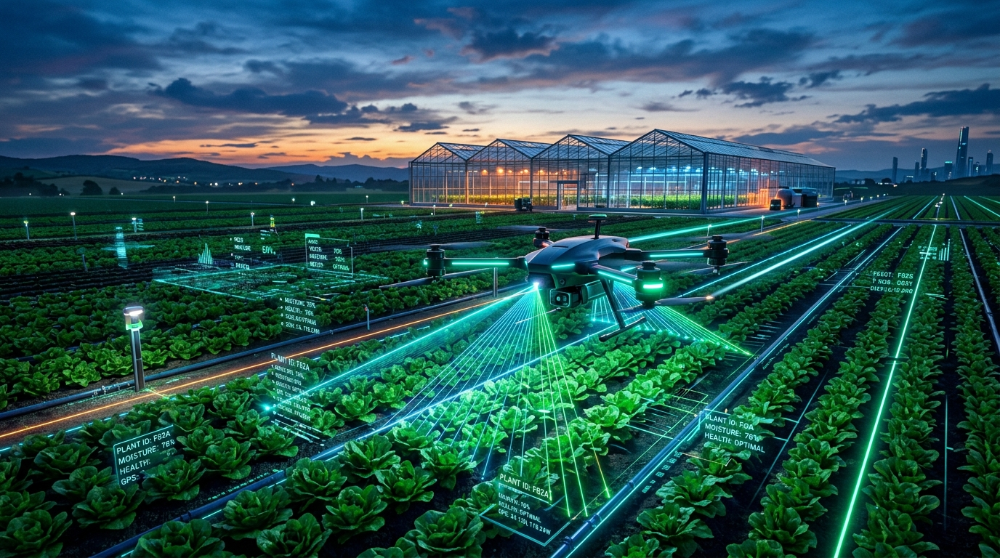
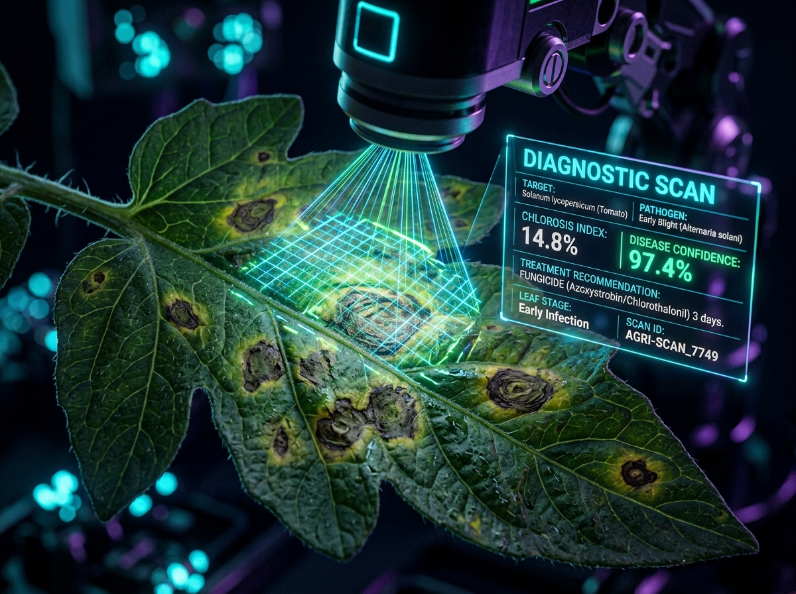

Our algorithms correlate your crop's current phenological stage, historical nutrient uptake curves, soil texture leaching parameters, and recent irrigation cycles. This avoids toxic fertilizer burns and optimizes nutrient use efficiency by up to 30%.
Next-Gen Agricultural Intelligence Platform
Precision Farming Powered by Predictive AI
Harness hyper-local microclimate sensors, real-time computer vision disease diagnostics, and tailored agronomic NPK prescription formulas to elevate harvest yields while conserving water and nutrients.
98.6%
Diagnostic Precision
34%
Water Conserved
42k+
Hectares Monitored
2.8x
Avg ROI For Growers

Ecosystem Architecture
Intelligent Agronomy at Every Scale
From smallholder family farms to industrial vertical greenhouses, AgroPulse unifies IoT telemetry, deep neural vision, and agronomic science into a seamless operating system.
Deep Learning
Computer Vision Diagnostics
Sub-millimeter plant pathogen detection identifying 130+ fungal, bacterial, and viral infections in seconds.
NPK Balancer
Precision Soil Chemistry
Micro-dosed nitrogen, phosphate, and potassium balancing mapped to your crop's exact vegetative life cycle.
Hyper-Local
Microclimate Spray Radar
Hourly evaporation, dew point, and gust tracking to target ideal spraying windows and prevent chemical runoff.
Real-Time
LoRaWAN Edge Mesh
Ultra-low-power field sensor arrays delivering multi-depth soil moisture and solar irradiation metrics 24/7.
Interactive AI Engine
Automated Agronomy Prescription
Select your crop parameters, current phenological growth stage, and soil conditions to generate an instant customized nutrient and irrigation schedule.
AI Prescribed Formula
Durum Wheat — VEGETATIVE PHASE
Irrigation Frequency
Every 8-10 days
Yield Boost Projection
+18% to +26% Projected
AI Agronomy Protocol: Rapid tillering phase. Top-dress with Nitrogen (Urea) before 1st crown root irrigation.
Verified by AgroPulse Soil Models v3.4
CALIBRATION ID: AG-9942
Real-Time Sensor Mesh
Live Field Telemetry Matrix
Continuous multi-sensor telemetry streaming from field loT probes, automated drip valves, and canopy thermal sensors.
Optimum
72%
Volumetric Soil Moisture
Normal
24.6°C
Canopy Temperature
Balanced
62%
Relative Humidity
Stable
148 ppm
Active Nitrogen Ion Flow
Deep Neural Vision
Plant Health & Pathogen Scanner
Experience our real-time cellular diagnostic vision model. Test pre-analyzed infected crop samples or upload your own leaf picture for immediate pathogen identification and remedies.

EARLY BLIGHT LESION (97.4%)
Select Diagnostic Demo Specimen:
Click to upload or drag & drop custom leaf photo
Supported formats: JPG, PNG, WEBP (Max 15MB)
Pathogen Diagnostics Output
Alternaria solani (Early Blight)
97.4%
Target Specimen: Solanum lycopersicum (Tomato)
Infection Severity
Moderate (Stage 2 concentric ring lesions on lower leaves)
Recommended Chemical Protocol
Spray Azoxystrobin (23% SC) @ 1 ml/L or Chlorothalonil 75% WP. Avoid overhead wetting.
Bio-Organic Remedy Alternative
Apply Trichoderma harzianum soil drench and Neem oil 1500ppm foliar coat.
Field spray advisory: isolate infected perimeter by 4 meters to curb airborne spore propagation.
Agro-Meteorology
Microclimate Spray Window Radar
Real-time localized wind speed, humidity, and rainfall probability to ensure 100% adherence and zero chemical runoff.
Farm Location Radar
Valley Basin Ag Cluster (Lat 28.61° N)
TODAY
28°C
Clear Sky • 0% Rain
TUESDAY
27°C
Partly Cloudy • 10% Rain
WEDNESDAY
24°C
Light Showers • 65% Rain
THURSDAY
26°C
Sunny & Dry • 5% Rain
FRIDAY
29°C
Mild Breezes • 0% Rain
Durum Wheat
Northern Mandi Index
$312 / MT
▲ +4.2% Bullish
Bt Cotton (Medium Staple)
Central Commodity Board
$980 / MT
▲ +1.8% Firm
Soybean Yellow #2
Global Terminal Trade
$455 / MT
▼ -0.6% Neutral
Hybrid Field Maize
National Feed Exchange
$260 / MT
▲ +3.1% Strong
Agronomist Answers
Frequently Asked Questions
Quick insights into how AgroPulse transforms traditional farming practices into precision high-yield operations.
Yes! Our lightweight quantized TensorFlow Lite / ONNX neural models can execute directly on your mobile device's Neural Processing Unit without requiring high-speed cellular data connectivity in rural areas.
We natively support standard RS485 Modbus soil TDR probes, LoRaWAN wireless moisture sensors, Campbell Scientific weather stations, and automated pulse drip solenoid controllers with standard MQTT protocols.
Spray windows evaluate three critical parameters: wind velocity (must be between 3 - 10 km/h to avoid drift or stagnant thermals), relative humidity (above 50% to prevent droplet drying before stomatal contact), and zero rain forecast for at least 4 hours.